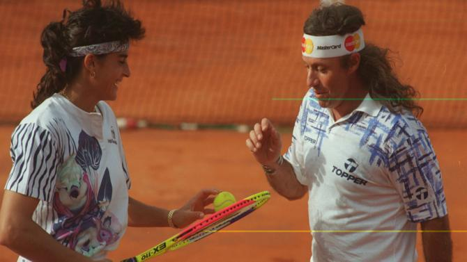

Tenis, el deporte blanco
El tenis en Argentina es uno de los deportes más populares, predominando las canchas con superficie lenta, de polvo de ladrillo.
Creada el 2 de septiembre de 1921, la Asociación Argentina de Tenis (AAT) es una asociación civil sin fines de lucro, rectora de todo cuanto se relaciona con el deporte del tenis y sus entidades afiliadas, que, entre clubes y federaciones, hoy suman más de 200, y con más de 8 mil jugadores federados.
Las principales competencias que se disputan en el país son el Torneo de Buenos Aires y el Córdoba Open, que integran el grupo de torneos del ATP Tour 250. Son dos de los cuatro torneos que conforman la denominada Gira Latinoamericana sobre polvo de ladrillo que tiene lugar a principios de año, entre la finalización del Abierto de Australia y el comienzo del Masters 1000 de Indian Wells.
Historia
El tenis nació en Escocia, sus primeros pasos en Argentina se remontan a los 1890's bajo el influjo del Imperio británico. En 1892 se creó el Buenos Aires Lawn Tennis Club, 22 años más tarde se fundó la Lawn Tennis League , la primera entidad dedicada a organizar el deporte en el país , qué en 1921 tomó el nombre de Asociación Argentina de Tenis.
La primera tenista argentina destacada internacionalmente fue una mujer, María Terán, quien en las décadas de 1940 y 1950 llegó a estar entre las 20 jugadoras más importantes del mundo. En la era abierta, Argentina ha contado con destacados tenistas de nivel mundial, entre los que se encuentran figuras como Guillermo Vilas, Juan Martín del Potro, David Nalbandian, José Luis Clerc, Guillermo Coria, Gastón Gaudio, seguidos de otros como Alberto Mancini, Guillermo Cañas, Diego Schwartzman, Juan Mónaco, Mariano Puerta, Martín Jaite, Guillermo Pérez Roldán y Juan Ignacio Chela.
Durante la década de 2000 Argentina se convirtió en una potencia del tenis mundial, siendo durante varios años el país con la mayor cantidad de jugadores entre los mejores del mundo, contando veintiún tenistas entre los Top 100 del ranking ATP durante dicho período, y destacándose particularmente por los once Top 25 del ranking ATP; David Nalbandian, Guillermo Coria, Gastón Gaudio, Guillermo Cañas, Mariano Puerta, Juan Mónaco, Franco Squillari, Juan Ignacio Chela, Agustín Calleri, José Acasuso y Mariano Zabaleta. Todos ellos nacieron entre 1975 y 1984, lo que convierte a los jugadores nacidos entre mediados de los 70s y mediados de los 80s, en la generación de oro de tenis argentino, la llamada "Legión Argentina". Como parte de la siguiente generación destacan los nacidos en los finales de los años 1980 y principios de los años 1990, Juan Martín del Potro (n.º 3), Diego Schwartzman (n.º 8), Guido Pella (n.º 20) y Leonardo Mayer (n.º 21).
Para la generación de los años 2020's aparecen nuevos tenistas nacidos a mediados de los 90's y principios de los 2000's que llegan al Top 100, como los hermanos Francisco y Juan Manuel Cerúndolo, Sebastián Báez, Tomás Martín Etcheverry, Pedro Cachín y Camilo Ugo Carabelli.
La mejor jugadora argentina de la historia es Gabriela Sabatini, quien obtuvo la medalla de plata en los Juegos Olímpicos de Seúl 1988. En 1990 ganó su único Grand Slam en singles en Estados Unidos: el Abierto de Estados Unidos y logró el título de Wimbledon en dobles junto a Steffi Graf. En 1989, 1991 y 1992 terminó en su mejor posición en el ranking mundial: el tercer puesto. Sabatini logró 27 torneos en singles y 12 en dobles.
En tanto, Paola Suárez alcanzó las semifinales individuales de Roland Garros 2004. Ivanna Madruga disputó los cuartos de final del Abierto de Estados Unidos 1980 y 1983. Bettina Fulco jugó los cuartos de final de Roland Garros 1988, e Inés Gorrochategui en Roland Garros 1994.
Por otra parte, Suárez y Gisela Dulko son las únicas jugadoras profesionales de Argentina que llegaron al primer puesto de la clasificación mundial en la modalidad de dobles femenino, acompañadas de la española Virginia Ruano y la italiana Flavia Pennetta respectivamente. Suárez logró 8 títulos de Grand Slam en dobles femeninos y alcanzó dos finales en dobles mixtos. Dulko obtuvo el Abierto de Australia en 2011, mientras que en 2010 llegó a semifinales de Wimbledon y ganó los Masters de Miami, Roma y Montreal, así como el WTA Finals, todos en dobles femeninos.
El año 2020, de la mano de Nadia Podoroska, el tenis femenino de Argentina vuelve a figurar en las plazas de élite. Ganó en 2019 la Medalla de Oro en los Juegos Panamericanos de 2019 de Lima. Escaló su rendimiento en 2020, llegando desde la clasificación a las semifinales de Roland Garros, cerrando luego el año con los cuartos de final en el WTA de Linz, y terminando en el puesto 47° del ranking, siendo la primera argentina entre las cincuenta mejores desde Dulko en 2011.